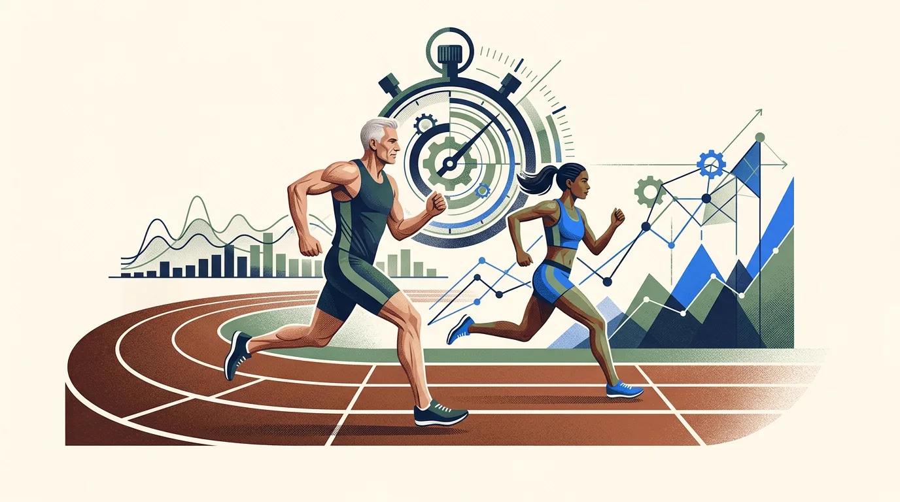

What Is Age Grading in Running?
Age grading is a mathematical methodology that evaluates a runner's race finish time against an age-and-sex-adjusted world benchmark for that specific event distance. Instead of judging athletic achievement solely by the hands of the stopwatch, age grading produces an age-grade percentage that levels the playing field across generations and genders.
If you have crossed a race finish line at Parkrun, a local 10K, or a major city marathon, you have likely spotted an age-grade percentage printed right next to your official gun or chip time. If you already have your race time, age, sex, and distance ready, you can use our Age Grading Calculator to determine your exact age-graded performance score.
“A 24:30 5K run by a 22-year-old represents a local hobbyist pace (~53%). That exact same 24:30 run by a 62-year-old woman is a blazing 76% Regional Class performance! Age grading stops unfair comparisons and reveals true athletic merit.”
What Is Age Grading in Running?
In standard road racing, the clock is completely indifferent to who crosses the line. A 25-year-old male finishing a 5K in 20:00 and a 65-year-old female finishing in 23:00 receive finish times that reflect only raw duration. To the casual spectator, the 25-year-old was simply "three minutes faster."
However, from a sports-science perspective, that raw comparison is fundamentally misleading. Human aerobic endurance, maximum heart rate, muscle fiber recruitment, and stroke volume naturally alter over a lifespan. Comparing raw finishing times between athletes at opposite ends of their life stages ignores the biological realities of human aging.
Age grading was created to bridge this gap. Developed and refined by statisticians and athletics governing bodies—most notably World Masters Athletics (WMA) and USA Track & Field (USATF)—age grading establishes a standardized demographic curve based on single-year age increments for every certified race distance.
Here is why each component is included in the evaluation:
- Why Age Matters: Beginning in an individual's early-to-mid 30s, maximal oxygen uptake ((VO_2 ext{ max})) declines at an approximate rate of 0.5% to 1.0% per year, even with disciplined endurance training. Connective tissue elasticity decreases, and maximum aerobic heart rate drops gradually. Age grading scales standards so that an older runner is evaluated against their demographic peak rather than a 22-year-old elite.
- Why Biological Sex Matters: Men and women possess distinct physiological baselines, including average hemoglobin concentrations, muscle fiber cross-sectional areas, and lung volumes. World records across all running events differ between sexes. Age grading maintains entirely separate reference tables for male and female runners to ensure equitable assessment.
- Why Distance Matters: Physiological decay does not happen at identical speeds across all running events. Explosive fast-twitch muscle capacity declines sooner than slow-twitch aerobic endurance efficiency. Consequently, age factors are calculated independently for every distance from 1 Mile to the 50K ultramarathon.
Crucial Distinction: It is essential to recognize that Race Time = actual recorded duration, whereas Age Grade = age-adjusted statistical comparison. An age grade does not diagnose your personal medical health, cardiovascular pathology, or clinical wellness; it simply contextualizes your racing pace against verified athletic standards.
How Does Age Grading Work?
At a conceptual level, age grading works by passing your race performance through a structured four-step computational pipeline:
Race Inputs
You record your exact integer age on race day, biological sex, certified race distance, and official finish time.
Reference Standards
The system retrieves the open world-record standard and the statistical single-year age factor from the WMA tables.
Demographic Scaling
The open standard is scaled by the age factor to establish the theoretical world-standard target time for your demographic.
Age Grade %
The demographic standard is divided by your actual finish time, yielding your final age grade percentage score.
To see how this operates with real, non-arbitrary numbers, consider a 50-year-old female running a certified 5K road race in 25:00 using the verified 2025 WMA road tables:
| Demographic & Event Variable | Applied Value | Sports Science Meaning |
|---|---|---|
| Runner Age | 50 years old | Exact chronological age on race day. |
| Biological Category | Female (F) | Assigned female demographic road standard. |
| Race Distance | 5K (5,000 meters) | Standard road 5K benchmark. |
| Actual Finish Time | 25:00 (1,500 seconds) | Official chip finish duration. |
| 2025 Open World Standard (Women) | 14:19 (859 seconds) | Theoretical baseline open world standard. |
| 2025 WMA Age Factor (F50) | 0.8480 | Single-year demographic speed retention factor. |
| Age-Graded Reference Standard Time | 16:53 (1,013.0 seconds) | Calculated as: Open Standard ÷ Age Factor. |
| Final Age Grade Score | 67.54% | Local Club Class competitive performance. |
Notice that no percentage was invented or guessed. The calculation is 100% deterministic, derived from thousands of verified masters championship records and statistical regression curves.
What Does an Age Grade Percentage Mean?
One of the most common points of confusion for runners is what an age-grade percentage actually signifies. Is it like a school grading test where 70% is a "C" and 90% is an "A"? Not quite.
An age-grade percentage represents your speed as a direct ratio of the theoretical world-record speed recorded for someone of your exact age and sex over that distance:
- 100.0% Score: Represents a performance equal to the theoretical world-record standard for your age and sex.
- Higher Percentage: Indicates that your finish time is closer to the world-standard benchmark for your demographic cohort.
- Lower Percentage: Indicates that your finish time is further from the world-standard benchmark, typical for newer or recreational runners.
Rather than thinking of your percentage as an arbitrary pass-or-fail grade, think of it as an objective indicator of relative athletic velocity. A score of 70% means your running speed was approximately 70% of the maximum recorded velocity attained by humanity for a runner of your age and sex.
Higher age-grade percentages generally indicate stronger relative conditioning, but realistic interpretation always depends on the environmental context, course profile, and individual running background.
Why Do Runners Use Age Grading?
Age grading has transitioned from a niche tracking tool for elite masters track athletes into an essential metric used by millions of regular runners worldwide. Runners use age grading to achieve five distinct goals:
Cross-Age Comparisons
Allows a 17-year-old child and a 48-year-old parent to run the same road 10K and see who delivered the stronger relative performance.
Multi-Decade Tracking
Enables athletes in their 40s, 50s, and 60s to measure whether their training consistency is overcoming natural physiological decline.
Overcoming Slower Clocks
Eliminates the psychological disappointment of seeing raw marathon times slow from 3:15 to 3:30 when personal fitness has actually improved.
Fair Club Handicaps
Running clubs use age grading to award annual trophies, handicap road leagues, and multi-generational championships equitably.
Distance Specialization
Runners can evaluate whether their age grade is higher in a 5K (e.g. 68%) or a Half Marathon (e.g. 74%), identifying natural endurance strengths.
Objective Motivation
Provides a lifelong progression ladder. Moving from 55% to 60%, or from 65% to 70%, gives runners concrete milestones across every decade.
Age Grading vs Race Time
To use running metrics effectively, runners must understand what each measurement is designed to do. No single metric provides the entire picture:
| Measurement | What It Measures | Units | Primary Advantage | Primary Limitation |
|---|---|---|---|---|
| Race Finish Time | Clock duration from start line to finish line. | Hours : Minutes : Seconds | Objective, universal, and easily recorded. | Disadvantages older athletes and female athletes in open fields. |
| Pace | Average duration per unit distance. | Min/km or Min/mile | Essential for in-race pacing strategies and splits. | Does not account for age, biological sex, or terrain steepness. |
| Age Grade (%) | Performance ratio relative to an age-adjusted world standard. | Percentage (0.0% – 100%+) | Allows fair comparison across ages, sexes, and race distances. | Requires statistical tables that must be periodically revised. |
| Age-Graded Time | Theoretical equivalent time if run in your open-division prime. | Hours : Minutes : Seconds | Helps masters runners visualize how fast their run was in open terms. | Theoretical abstraction rather than a physical clock time. |
The Key Takeaway: Your race time tells you what happened on the clock on that specific day. Age grading adds deep physiological context by answering: "Considering who you are chronologically and biologically, how impressive was that clock time?"
You can test both metrics concurrently with our Age Grading Calculator.
Why Is Age Grading Useful for Masters Runners?
Masters running—typically defined in road racing and track athletics as competition for athletes aged 35 or 40 and older—is the primary proving ground for age grading.
As runners age, undeniable physiological shifts take place:
- Maximal Aerobic Power: Maximum heart rate declines by approximately one beat per minute per year, reducing cardiac output.
- Muscle Mass & Fiber Shift: Sarcopenia gradually reduces type II (fast-twitch) muscle fibers, impacting sprinting speed and late-race kick.
- Connective Tissue Stiffness: Tendons and ligaments lose elasticity, slightly decreasing running economy and energy return per stride.
- Recovery Kinetics: Protein synthesis and hormonal recovery rates slow, requiring more recovery days between high-intensity workouts.
Because of these factors, an athlete who ran a 35:00 10K at age 26 will find it physiologically impossible to match that clock time at age 62, regardless of how meticulously they eat, sleep, and train. If raw clock time were the only scorecard, aging in the sport of running would feel like a continuous, demoralizing defeat.

Age grading completely changes this dynamic. By evaluating performance against age-specific regression curves, masters athletes often discover that their relative conditioning is reaching all-time highs even as their raw times slow down:
Male, Age 25
Distance: 5K Road
Finish Time: 19:30 (Pace: 3:54 /km)
Performance: Above-average recreational enthusiast.
Male, Age 58
Distance: 5K Road
Finish Time: 21:15 (Pace: 4:15 /km)
Performance: Seasoned competitive masters athlete.
In this real-world scenario, Runner A crossed the finish line 1 minute and 45 seconds ahead of Runner B. Yet Runner B achieved a 73.85% Regional Class score, demonstrating substantially greater relative athletic achievement than Runner A's 65.73%. Age grading gives Runner B the recognition their conditioning deserves.
Age Grading and Age Groups: What's the Difference?
Many race participants see both an Age Group Position (e.g., "3rd out of 42 in M50–54") and an Age Grade (e.g., "71.4%") on their race certificates and assume they measure the same thing. In reality, they are fundamentally distinct:
- Age Group: Measures your finishing place relative strictly to the people who showed up to that specific race in your bracket. If only three people in your 5-year bracket entered the local 5K, you could walk the entire course, finish in 45 minutes, and still "win" your age group. Conversely, at the Boston Marathon, you could run a blistering 2:55 at age 52 and place 85th in your division.
- Age Grading: Evaluates your finish time against a permanent, objective, worldwide statistical standard for your exact single year of age. It does not matter whether 5 people or 50,000 people ran in your race; your age grade remains identical.
For example, you might finish 4th in your age group at a highly competitive autumn half marathon with a 72.5% age grade, and two months later finish 1st in your age group at a tiny winter charity run with a 68.0% age grade. The age grade reveals that your 4th-place run was actually your superior athletic performance.
“Never feel discouraged by a 54% or 58%! Over 60% of runners at typical weekend races finish in the recreational 45%–58% tier. Hitting 60%+ places you in the top third of active club runners.”
What Is a Good Age Grade in Running?
While there is no single statutory rule that defines a "good" age grade, the international running and masters coaching community broadly recognizes six competitive performance tiers:
| Age Grade Range | Recognized Performance Band | Typical Athletic Context |
|---|---|---|
| 100.0%+ | World Record Level | Equal to or faster than the theoretical world standard for that age cohort. |
| 90.0% – 99.9% | World Class | Capable of contending for medals at major international masters championships. |
| 80.0% – 89.9% | National Class | High competitive standard capable of qualifying or placing at national road races. |
| 70.0% – 79.9% | Regional Class | Strong competitive runner, frequently placing near the front of local road races. |
| 60.0% – 69.9% | Local / Club Class | Above-average club runner with consistent weekly training and solid aerobic base. |
| Below 60.0% | Recreational | Typical participation standard for fitness runners, beginners, and charity participants. |
Most beginners start between 40% and 50%. With six to twelve months of structured aerobic conditioning, many runners advance into the mid-50s. Breaking the 60% threshold is a major milestone for recreational runners, marking the transition into competitive local club standards.
How to Calculate Your Age Grade (High-Level Overview)
The mathematical engine powering age grading is straightforward. Rather than complex black-box modeling, the official WMA methodology applies a deterministic algebraic formula:
In this equation:
- Open Standard Time: The baseline world-record time for that event distance (in total seconds).
- Your Race Time: Your official gun or chip finish time converted to total seconds.
- Age Factor: The demographic coefficient ((le 1.0)) published by WMA for your exact integer age and sex.
Equivalently, dividing the Open Standard Time by the Age Factor produces the Age-Graded Reference Standard Time (the target world standard for your demographic). Dividing that reference time by your actual time gives the identical percentage.
Step-by-Step: How to Use an Age Grading Calculator
Calculating your age grade takes less than ten seconds when using our client-side tool:
- Enter Your Age: Input your exact chronological age on race day (supported from ages 5 to 99).
- Select Your Sex: Choose Male or Female to load the correct WMA physiological standard table.
- Choose Your Race Distance: Select from 10 certified road events including 5K, 10K, Half Marathon, and Marathon.
- Enter Finish Time: Type your hours, minutes, and seconds. For races under an hour, leave hours as 0.
- Review Your Results: Instantly inspect your age grade score, performance band badge, reference standard time, and average pace per kilometer and mile.
- Track Progress: Copy your result or share the direct link to log your longitudinal fitness trend.
Calculate Your Running Age Grade Now
Enter your race time, age, sex, and distance to see where your performance lands on the official 2025 WMA road performance spectrum.
Launch Age Grading Calculator →Age Grading for Different Running Distances
One of the strengths of the WMA framework is that it recognizes that human stamina decays at varying rates across different race lengths. A 60-year-old runner may retain a higher percentage of their marathon aerobic endurance than their 1-mile explosive turnover:
| Race Event | Distance | Primary Energy System | WMA Table Coverage |
|---|---|---|---|
| 1 Mile Road | 1,609 meters | High-intensity VO2 max & anaerobic threshold | Single-year ages 5–99 |
| 5K Road | 5,000 meters | Aerobic power & sustained threshold velocity | Single-year ages 5–99 (Parkrun benchmark) |
| 10K Road | 10,000 meters | Lactate threshold endurance & pacing discipline | Single-year ages 5–99 |
| Half Marathon | 21.0975 km | Aerobic capacity & glycogen conservation | Single-year ages 5–99 |
| Marathon | 42.195 km | Long-distance lipid oxidation & muscular fatigue | Single-year ages 5–99 |
| 50K Ultramarathon | 50,000 meters | Ultra-endurance, nutrition pacing & resilience | Single-year ages 5–99 |
Because each distance maintains its own independent table of open standards and age factors, you cannot take a 5K age grade and assume it directly predicts your marathon percentage without running the event.
What Factors Can Affect an Age Grade Result?
While age grading is an exceptional sports-science benchmark, race conditions in the real world introduce significant variance:
- Course Elevation & Hills: WMA standards assume a flat, paved asphalt course. A rolling or hilly course will result in a slower clock time and a lower age grade, even if your cardiovascular effort was world class.
- Weather & Thermal Load: High ambient temperatures, excessive humidity, heavy rain, or strong head-winds substantially impair endurance performance. The WMA tables do not apply environmental weather offsets.
- Table Editions: Different race timing providers and websites may use different historical editions of the age-grade tables (e.g., 2006, 2015, 2020, or 2025). When world records fall, factors are adjusted. Small variations between calculators are usually due to differing table revisions.
- Course Certification: If a race course was not formally certified and measured short or long by GPS, your resulting time will distort your percentage.
“Age grading is a training and comparison tool, not a medical examination. It evaluates race finish speed, not your clinical heart health, blood lipid profile, or overall physical vitality.”
Limitations of Age Grading
To use age grading responsibly, runners and coaches should be mindful of its operational limitations:
- Not a Clinical Health Metric: An age grade percentage is strictly a mathematical ratio of racing speeds. It does not measure blood pressure, cardiovascular disease risk, or metabolic fitness.
- Statistical Outliers at Extremes: For youth runners under age 10 and masters runners over age 85, elite competition sample sizes are comparatively small, meaning regression curves carry wider confidence intervals.
- Unofficial for Race Placements: Unless a race explicitly advertises an age-graded prize division, official podiums and awards are determined by physical crossing order, not calculated percentages.
Frequently Asked Questions
What is age grading in running?
Age grading is an athletic performance methodology that evaluates a runner's race finish time against an age-and-sex-adjusted world standard for that specific distance. Instead of looking only at the stopwatch, age grading produces a percentage score that allows fair comparisons across different generations and genders.
What does an age grade percentage mean?
An age grade percentage represents how close your race time is to the theoretical world-record pace for someone of your exact age and sex. A higher percentage indicates a stronger performance relative to that demographic benchmark, with 100% representing world record level.
Why do runners use age grading?
Runners use age grading to track their fitness objectively over multiple years, compare results fairly with runners of different ages and genders, evaluate masters running progress despite natural biological slowdown, and set personalized racing targets.
Is age grading the same as age-group ranking?
No. An age-group ranking tells you where you placed relative only to competitors who ran in your age bracket on that day. Age grading evaluates your performance against an objective, universal statistical standard regardless of who showed up to the race.
Is a higher age grade better?
Yes. In age grading, a higher percentage indicates a faster relative finish time compared to the demographic reference standard. For example, a 72% age grade represents a stronger age-adjusted performance than a 64% age grade.
Can age grading compare runners of different ages?
Yes. Comparing runners of different ages is the primary purpose of age grading. By applying statistical decay curves derived by World Masters Athletics, it levels the playing field so a 60-year-old and a 25-year-old can compete on equal terms.
How do I calculate my age grade?
You calculate your age grade by entering your race day age, biological sex, certified race distance, and official finish time into an age grading calculator that references official WMA tables, which divides the demographic reference standard by your actual finish time.
Is age grading a measure of fitness or medical health?
No. Age grading is purely an athletic race-performance comparison tool. It evaluates finishing times in running events and does not assess cardiovascular health, metabolic fitness, clinical biomarkers, or medical wellness.
Age Grading Topic Cluster Resources
This guide serves as the foundation for our comprehensive running performance series. Explore additional resources in this cluster:
Running Performance Cluster Guides
- What Is Age Grading in Running? A Complete Guide (Current)
- How Is Age Grade Calculated? Formula, Examples & Explanation →
- What Is a Good Age Grade in Running? Percentage Guide →
- Age Grading for Masters Runners: How It Works & Benefits →
- Age-Graded Results vs Age-Group Results: Key Differences →
- 5K Age Grading: How to Evaluate Your 5,000m Road Times
- 10K Age Grading: Evaluating 10,000m Road Race Performance
Methodology & Official Sources
Transparency, scientific rigor, and mathematical verification are central to Age Calculator Lab.
The standards and calculations discussed in this guide are derived strictly from the official 2025 USATF Masters Long Distance Running (MLDR) / World Masters Athletics (WMA) Road Age-Grade Tables, compiled by Alan Lytton Jones and Tom Bernhard (approved January 2025). The underlying dataset is published under the Creative Commons CC0 1.0 Universal Public Domain Dedication.
- Alan Lytton Jones Age-Grade Tables Repository — Primary archival source for verified road age-grading factors.
- Howard Grubb Athletics Performance Archives — Co-creator and historical archivist for WMA age-grading methodologies.
- World Masters Athletics (WMA) — The international governing body for masters athletics and road running.
- USA Track & Field (USATF) Masters LDR Committee — Co-sanctioning body for road-running age-grading tables.

Navjeet Kamboj
Navjeet Kamboj is the author and editor of Age Calculator Lab. He specializes in chronological calculation engines, demographic date mathematics, and verified performance-grading algorithms. He builds client-side computational tools to deliver transparent, mathematically sound answers without advertising trackers or data harvesting.